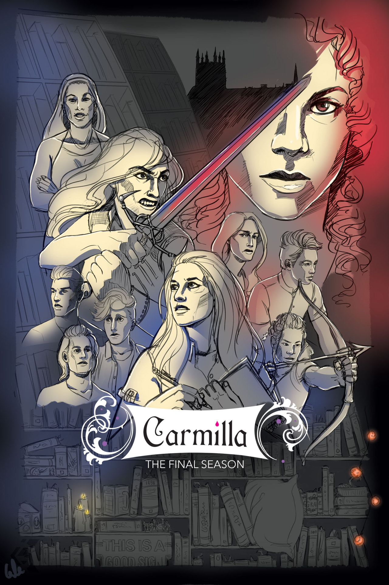

Carmilla
9/10
Lesbian content: 9/10. I love the characters’ relationship in the first season. The later seasons aren’t as good. There was a lot of great make out scenes.
I love the characters together and want them to date in real life. Everyone manifest it.
Plot: 5/10. The first season is really good, the second season was okay, and the third season was garbage.
They had a good idea in the first season and tried to extend the drama throughout the later seasons and it became tiresome.
The third season really lost me. I stuck around for the kissing though. On a side note, you should look up their fan made content. That stuff is great.